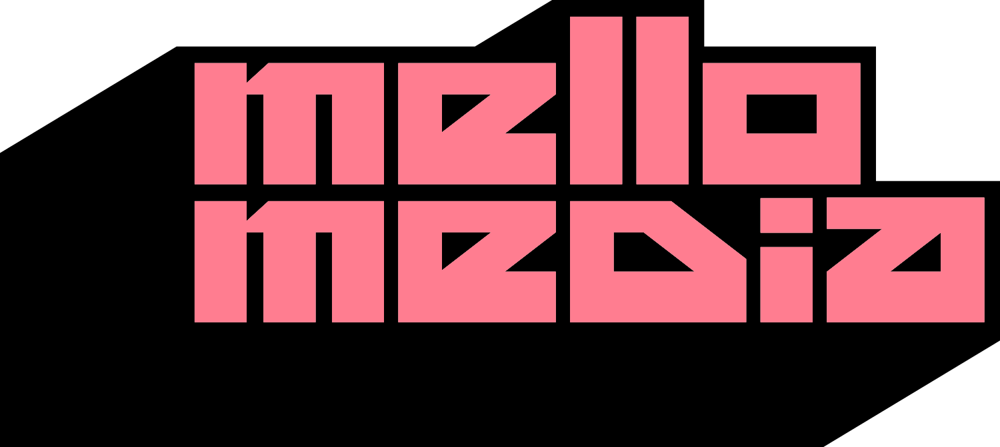
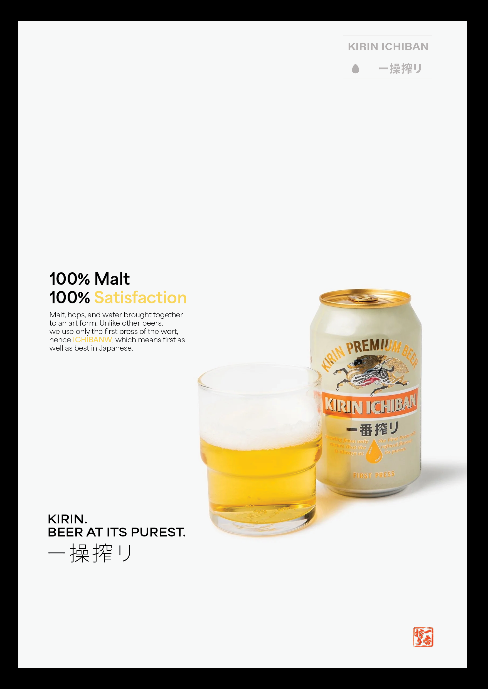
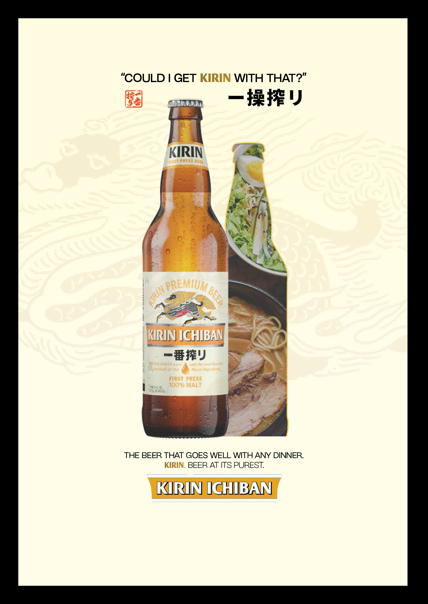

Kirin Ichiban Magazine Spread (2024)
Visual Communication
51

Overview
Inspired by a memorable glass of Kirin Ichiban at a local Izakaya, I set out to capture the elegance and versatility of this exceptional beer. The unique taste left an impression unlike anything I had experienced before, motivating me to create a magazine advertisement that highlights its adaptability across settings—from casual dinners to professional gatherings..
The design focuses on simplicity and clarity, reflecting the refined nature of the beverage itself. I selected a clean, visually appealing font that ensures the message is easy to read while enhancing the overall aesthetic. This project celebrates Kirin Ichiban as a beer that complements moments both ordinary and extraordinary.

